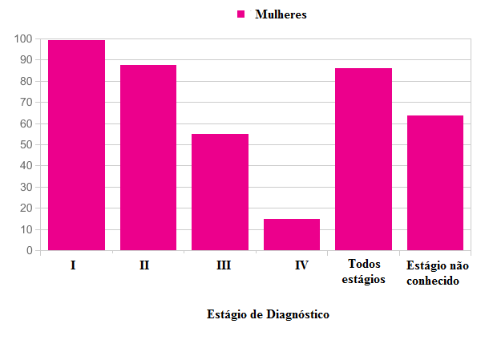

Outubro Rosa é uma campanha de conscientização que tem como objetivo principal alertar as mulheres e a sociedade sobre a importância da prevenção e do diagnóstico precoce do câncer de mama e mais recentemente sobre o câncer de colo do útero.
Como adiantamos anteriormente, o movimento conhecido como Outubro Rosa nasceu nos Estados Unidos, no final do século 20. Na época, a Fundação Susan G. Komen for the Cure promoveu uma corrida nas ruas de Nova York com o objetivo de conscientizar a população sobre o câncer de mama. Nesse evento, o laço cor-de-rosa foi lançado e distribuído a todos os participantes da corrida, tornando-se símbolo oficial da luta. Não à toa, o nome da campanha remete à cor do laço.
A primeira iniciativa em relação ao Outubro Rosa no Brasil aconteceu em 2002, quando o monumento Obelisco do Ibirapuera, em São Paulo, recebeu uma iluminação dessa cor. A ação foi impulsionada por um grupo de mulheres simpatizantes ao movimento em conjunto com uma empresa europeia.
O sucesso do tratamento está diretamente relacionado ao estágio no qual o câncer é diagnosticado. Por isso, a campanha Outubro Rosa, iniciada nos Estados Unidos em 1997 e atualmente propagada pelo mundo, tem como objetivo incentivar e conscientizar a prevenção por meio do diagnóstico precoce.

Estatísticas demonstram que a taxa relativa de sobrevida de mulheres com câncer de mama em estadiamentos clínico I e II, diagnosticados em estágios iniciais, são de 99,1% e 87,6%, respectivamente, enquanto os estágios III e IV, diagnósticos tardios, possuem uma taxa de sobrevivência de 55,1% e 14,7%, respectivamente, como mostra o gráfico abaixo.
